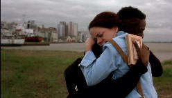

O HOMEM QUE COPIAVA (El Hombre que Copiaba)
|
(35 mm, 124 min, color, 2003) André, 20 años, operador de fotocopiadora en una papelería, necesita desesperadamente de treinta y ocho reales para impresionar la chica de sus sueños, Sílvia, que vive en el edificio en frente y trabaja como vendedora en una tienda de ropas femeninas. Ayudado por su amigo Cardoso, y después también por su colega de trabajo Marinês, André hace muchos planes para conseguir dinero. Y todos funcionan. Y ahí es donde empiezan sus problemas. |
 |
{kind=link}
Sobre las filmaciones (set-nov/2001)
Dirección: Jorge Furtado
Producción Ejecutiva: Nora Goulart e Luciana Tomasi
Guión: Jorge Furtado
Dirección de Fotografia: Alex Sernambi
Dirección de Arte: Fiapo Barth
Música: Leo Henkin
Diretora Assistente: Ana Luiza Azevedo
Dirección de Producción: Marco Baioto
Montaje: Giba Assis Brasil
Dirección de Animação: Allan Sieber
Una Producción Casa de Cinema PoA
Reparto Principal
Lázaro Ramos (André)
Leandra Leal (Sílvia)
Luana Piovani (Marinês)
Pedro Cardoso (Cardoso)
Carlos Cunha Filho (Antunes)
Júlio Andrade (Feitosa)
Prêmios
- 2° Premio RGE/Gobierno del Estado del RS, 2002:
Apoyo a la producción.
- 25º Festival del Nuevo Cine Latinoamericano, Habana, CUBA, 2003:
Mejor Actor (Lázaro Ramos).
- 7º Festival de Cinema Luso Brasileño, Santa Maria de la Feira, PORTUGAL, 2003:
Mejor Película (Jurado Popular), Mejor Película (Premio de Crítica), Mejor Película (Fed. Cineclubes).
- Premio APCA (Asociación Paulista de los Críticos de Arte) 2003:
Mejor Película brasileña del año.
- 8° Festival Internacional de Kerala, ÍNDIA, 2003:
Melhor Dirección.
- 21° Miami International Film Festival, Miami, EUA, 2004:
Mejor Screenplay Ibero-americano.
- 7° Festival Cine Punta Del Este, Uruguay, 2004:
Mejor Película Latino-americana (Premiacion de la Crítica), Mejor Película (Jurado Popular), Mencion Honrosa por el Jurado Oficial.
- 1° Prêmio ACIE (Associação dos Correspondentes da Imprensa Estrangeira no Brasil) 2003:
Mejor Película brasileña del año
- 14º Cinequest Film Festival, San José, California (EUA), 2004:
"Maverick Spirit Award" (Mejor Película de Ficción).
- 30° Festival SESC dos "Melhores do ano", São Paulo, 2004:
Mejor Película (segundo a crítica), Mejor Screenplay (público e crítica), Mejor Actor (Lázaro Ramos - público e crítica).
- 22° Festival de Cine de Montevideo, Uruguay, 2004:
Mejor Película Latino-americana.
- 6° Festival do Cinema Brasileiro de Paris (França), 2004:
Melhor Película (Jurado Popular), Premiación Especial del Jurado.
- 8º Elcine, Encuentro Latinoamericano de Cine, Lima, Peru, 2004:
2º Mejor Película (Jurado Popular).
- 4º Prêmio TAM-Cinema Brasil, 2003:
Mejor Película, Mejor Guión, Mejor Atriz Coadjuvante (Luana Piovani), Mejor Actor Coadjuvante (Pedro Cardoso), Mejor Screenplay y Mejor Montaje.
- 16º Festnatal, Natal/RN, 2006:
Melhor Screenplay Original.
Crítica
"EL HOMBRE QUE COPIABA, sin dispensar la crítica social, es justamente lo opuesto de un país siempre buscando la piedad ajena, que parece nunca tener más para enseñar que su propia miseria. Es, al mismo tiempo, una historia de amor, una comedia contagiante, y un himno al “más vale luchar que desistir”. Una Película notable, auténtica y inteligente, que no defrauda las expectativas creadas por el estreno del realizador en “HUBO UNA VEZ DE LOS VERANOS."
(Helena Teixeira de la Silva, Jornal de Notícias, Porto, PORTUGAL, 15/12/2003)
"La primera parte de EL HOMBRE QUE COPIABA deja apreciar una trama intimista que gradualmente, sin contar "grandes cosas", se gana el interés del espectador. Luego, aquel tono reposado acerca de los sueños y esperanzas de un pobre hombre que parece condenado a una vida sin sabores, salta al thriller tejido con argucia, pero con alguna que otra reverencia a la contentura taquillera, es decir, un happy end que no tenía que serlo tanto. Con todo, la película es una gran gozada."
(Rolando Pérez Betancourt, GRANMA, Havana, CUBA, 10/12/2003)
"A lowbudget comedy, (THE MAN WHO COPIED) is possibly the Brazilian film of the current crop which stands (after Carandiru) most chance of getting an international release. Lázaro Ramos, Brazil's hottest new actor, plays the operator of a photocopy machine who ends up involved in a bank heist. It is clever, light-hearted and touching, even if towards the end it becomes a little too screwball for its own good. The characters in the movie, set in the southern city of Porto Alegre, dream of flying to Rio. It's somewhat heartening to learn that its not just Fred, Ginger and Ronnie Biggs who flew to Rio - but that the city is cinematic shorthand even in Brazil itself for freedom, exoticism and glamour."
(Alex Bellos, THE GUARDIAN, Londres, INGLATERRA, 13/10/2003)
"En el Festival de Cine de San Sebastián (...) se exhibió EL HOMBRE QUE COPIABA, del brasileño Jorge Furtado, en la que hay buenas gentes que sueñan con pequeñas, para ellos enormes, ambiciones. Y uno sonríe porque la pizca de locura y los sueños convertidos en realidad le complace."
(Carlos Pumares, LA RAZÓN, Madri, ESPANHA, 21/09/2003)
"Pocas Películas brasileñas, creo yo, habrán dado al dinero – a la pasta, a la guita, (en su materialidad, en su falta bien caracterizada) - la función de ser casi personaje de la historia, como pasa en EL HOMBRE QUE COPIABA. Bien que la Película también podría ser llamada "El Hombre que Calculaba", como en el libro de Malba Tahan: el protagonista vive con el dinero contado y pasa un buena parte del tiempo (o sea, como cualquier cineasta brasileño) administrando su mínimo presupuesto."
(Marcelo Coelho, Folha de São Paulo, 25/06/2003)
"Todo en la Película tiene una copia, una imagen reflejada, un doble. Exactamente como cuando entramos en el cine y nos identificamos con una situación en desarrollo en la pantalla, o con un personaje cualquiera. Pero ni todos esos dobles están a la disposición del espectador, como sería común en una Película de amplio consumo y ingestión fácil. Muchas veces están a la sombra o disimuladas, esperando que una mirada más profunda los capte. Para todos los gustos."
(Alessandro Giannini, revista ISTO ES GENTE, 16/06/2003)
"El intimismo es solo uno de los segmentos de la forma de la Película, que no se inhibe al inspirarse o citar una fauna variada de artistas, de Shakespeare a Xavier de Maistre, de Andy Wahrol a Alain Resnais. Esas inspiraciones no se exponen de manera esnob, como en cierta tradición de 'Película de autor' que no dispensa las pasarelas de los festivales internacionales. Guionista ante todo, Furtado sabe reciclar sus pasiones literarias y audiovisuales en lenguaje cinematográfica. (...) Obra de orfebrería perfeccionada a lo largo de unos cinco años, el guión elabora obstáculo a obstáculo, conflicto a conflicto - siempre con mucho humor."
(Ely Azeredo, JORNAL DEL BRASIL, Río de Janeiro, 15/06/2003)
"Con buen humor, el cineasta habla de una generación sin perspectivas, que quiere apenas arreglárselas en la vida, ganar un buen dinero, sea como sea. Llama la atención la manera como Furtado apenas constata ese etapa ética de la sociedad brasileña, sin juicio o cualquier sombra de moralismo. (...) Al contrario de la mayor parte de las Películas recientes, EL HOMBRE QUE COPIABA va mejorando a medida en que se piensa en ella."
(Luis Zanin Oricchio, O ESTADO DE SÃO PAULO, 13/06/2003)
"Furtado mantiene la apuesta en el humor, en las narraciones en off del protagonista, en los escenarios riograndenses (sale la playa, entra la ciudad) y en las referencias a Shakespeare. Pero, en vez de la estructura linear, el cineasta pone en práctica la experimentación narrativa, los ejercicios de metalenguaje y el estilo de hipertexto característicos de cortos como el premiadísimo ISLA DE LAS FLORES. (...) Mucho del placer de ver a ese colage de géneros y citaciones está en juntar las piezas del juego de la memoria propuesto por Furtado. También es preciso que el espectador no reclame moral ni realismo - EL HOMBRE QUE COPIABA es una gran fantasía."
(Ticiano Osório, ZERO HORA, Porto Alegre, 13/06/2003)
"El director tiene a su favor una felicísima elección de elenco, a comenzar por Ramos y Leandra, ambos excelentes. Pero el factor esencial en la calidad de la Película no es otro que el propio Furtado. (...) Él forma parte de una corriente que ya no sin tiempo se consolida en el país, la de los cineastas que conocen la importancia absolutamente central del guión. Furtado trabajó en El Hombre que Copiaba durante cerca de cinco años. En el primero, dice, no hice más que escribir la narración que guía la Película, inspirada en la de clásicos modernos como El recolector en el Campo de Centeno, Complejo de Portnoy y Matadero 5. El director no tiene ningún pudor en deshilvanar esas y decenas de otras referencias deliberadamente incluidas en la historia. Ni debería. Él parte de un colage, pero llega a un original: una película que no se parece en nada con ninguna otra."
(Isabela Boscov, VEJA, 11/06/2003)
13/06/2003